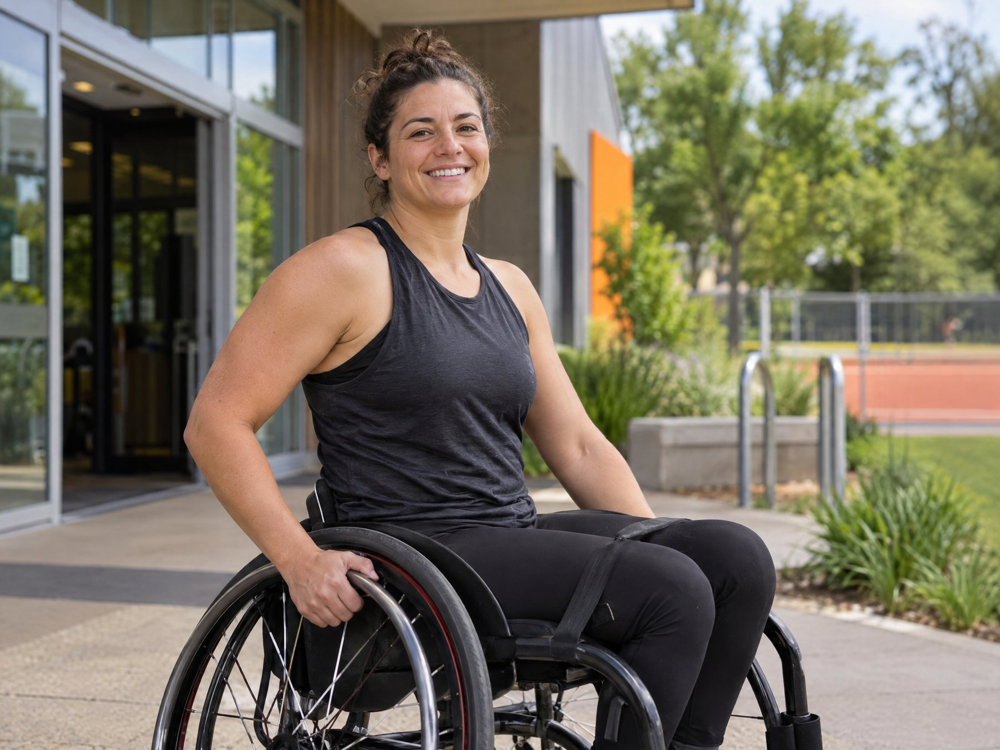

Carol Santiago
Nadadora de Recife, Carol migrou da natação convencional para a paralímpica no fim de 2018. Seu perfil oficial registra seis ouros paralímpicos e o recorde mundial dos 50 m livre, 26s61, estabelecido em 2024.
Ver perfil oficial do CPBPágina 4 · trajetórias
Trajetórias diferentes ajudam a conhecer o esporte paralímpico sem reduzir atletas à deficiência ou tratar conquistas como histórias de superação obrigatórias.

Pessoas antes dos resultados
Conhecer trajetórias amplia o repertório e ajuda a enxergar atletas como pessoas, competidoras e protagonistas de suas escolhas.
Resumo de perfis publicados pelo CPB. Os dados foram consultados em 9 de novembro de 2026 e podem mudar; acesse as páginas oficiais para atualizações.
Nadadora de Recife, Carol migrou da natação convencional para a paralímpica no fim de 2018. Seu perfil oficial registra seis ouros paralímpicos e o recorde mundial dos 50 m livre, 26s61, estabelecido em 2024.
Ver perfil oficial do CPBAtleta paraibano dos 100 m. O perfil do CPB registra três ouros paralímpicos e o recorde mundial da prova em 10s29.
Ver perfil oficial do CPBOs perfis acima são dois exemplos. O movimento paralímpico tem atletas de diferentes idades, gêneros, regiões, modalidades e classes.
Explore outros perfis oficiaisFonte dos dados biográficos e resultados: perfis individuais do CPB — Carol Santiago e do CPB — Petrúcio Ferreira, consultados em 09/11/2026.
Classes esportivas agrupam atletas segundo critérios próprios de cada modalidade. A classificação busca tornar a competição mais justa; não é uma medida geral de capacidade nem define a identidade da pessoa.
Para explicações e regras atuais, prefira as páginas oficiais das modalidades e da competição.